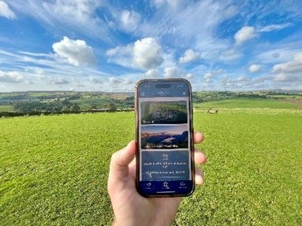

Dedicated app boosts guest experience at award-winning campsites
WCF has introduced a bespoke app to make the guest experience even better. WCF developed the customer app in conjunction with technology firm Holidaymaker to improve access to key information about the site amenities, accommodation and local area and encourage visitor interaction, allowing them to better plan their holiday in advance.
The technology has been rolled out across our three sites at Drummohr Camping and Glamping Site, near Edinburgh, Herding Hill Farm, close to Hadrian’s Wall in Northumberland, and Longnor Wood in the heart of the Peak District.

- Access information about accommodation, site facilities, events and optional extras
- Find reminders about what to bring to make the most of their stay
- Explore an interactive map of the campsite
- Find out where to eat and visit locally, with key links to the websites of local attractions, including how to book tickets
- Discover nearby walking and cycling routes
- Take advantage of special offers, manage their booking and leave feedback
- Re-book before they leave to gain a loyalty discount
Guests can also create personalised holiday itineraries before they arrive via the app, and receive pop up notifications with useful information such as any emergency road closures nearby, or the arrival of a mobile pizza van or ice cream van on site.
Jo Ritzema, Executive Chair of WCF, said: “Our guests are what make the success of our campsites, and we’re always looking at ways to improve the on-site experience to make their stays even better than before. The app boosts the services we already provide and helps ensure that our guests have all the information they need for an enjoyable and relaxing stay. We worked closely with the team at Holidaymaker to develop a different version of the app for each site so it reflects the location, and the events and activities available. We believe it takes staying at all our campsites to the next level and it’s really exciting that our guests now have easy access to these extra services and offers at the touch of a button.”
All three sites are five-star rated from the AA and have picked up numerous awards including Drummohr being named best campsite in the UK in a poll by Camping magazine, Longnor Wood winning the AA’s Heart of England Campsite of the Year and the UK’s Best Adult Only Site by Campsites.co.uk for two consecutive years, and Herding Hill Farm achieving a coveted AA Platinum Pennant Award.
David Lakins, CEO of Holidaymaker, said: “Working with the WCF team has been a pleasure, and we’re excited that the Holidaymaker platform is continuing to enhance the guest experience. The app is already seeing an impressive number of downloads, enabling guests to better self-serve and fully explore the stunning surroundings. The WCF team has really engaged with the app, and Holidaymakers’ Direct-to-Guest Marketing™ tools, and it’s fantastic to see how much of an impact it is having for both staff and guests.”
A different version of the app is available for each individual campsite and can be downloaded on all main mobile devices. The app can be downloaded by anyone, with or without a booking. The sites promote the app via notices on site, on their websites and on social media.
Press Links
< Previous Article Allan Stobart Lubricants and Fuels announces expansion plans